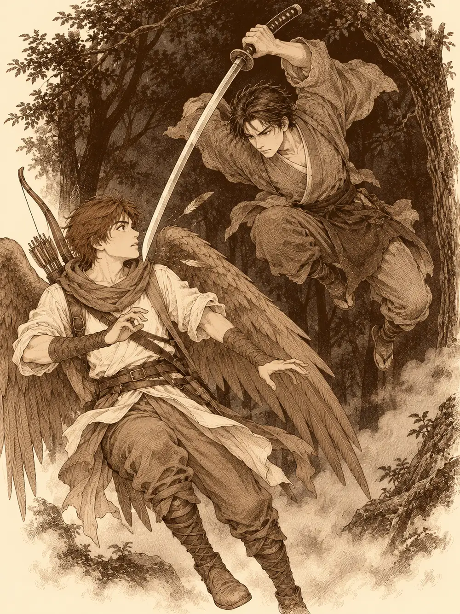

Capítulo 6
El ronin y el yokai
Libro I · Los cazadores de Ukio
La bolsa de especias pesaba poco, pero Jin la llevaba como si fuera una ofensa personal. Kitaro los había mandado a buscarla a otro pueblo, porque en Ukio nadie las vendía, y ahora volvían de noche por el bosque de Jigoku con una antorcha que apenas alumbraba tres pasos de raíces y niebla. Hayate caminaba unos metros por delante. Él sí veía en la oscuridad, o algo parecido, y fue el primero en distinguir las dos figuras que se acercaban entre los troncos.
"Alto. Identificaos".
Una de las figuras se adelantó con la mano en alto, saludando. La otra se quedó atrás, en la sombra, y a su alrededor se encendieron unas chispas azuladas, pequeñas, que flotaban junto a su espalda como luciérnagas mal dispuestas. Cuando Jin levantó la antorcha vio quiénes eran. El que saludaba era un hombre dragón, alto, con un hocico escamoso en el que la llama arrancaba reflejos. Detrás de él, entre los matorrales, se movía alguien más: una drow armada y callada, y a sus pies una araña del tamaño de un perro que se detenía cuando ella se detenía.
"Buenas noches", dijo el hombre dragón. "¿Qué os trae por este bosque?".
"Lo mismo os pregunto".
"Limpiar estas tierras de demonios".
"Nosotros también", dijo Jin. "Hemos matado unos cuantos".
Las chispas se apagaron. El hombre dragón se presentó como Hino Yama; sabía de magia y no tenía ningún interés en pelearse con nadie que no fuera un yokai. La drow se llamaba Tarutaru, y la araña era suya. Jin les tendió la mano a los dos y, después de pensarlo un momento, también a la araña, que no se la estrechó. Hablaron de pipas y de cerveza, de lo bien que vendría una taberna, y como la de Kitaro estaba de camino, siguieron juntos.
El bosque se cerraba sobre ellos como un techo bajo. La niebla se pegaba al suelo y amortiguaba los pasos, y Tarutaru, que veía en la oscuridad mejor que nadie, caminaba a gusto, como quien vuelve a casa. Hayate, en cambio, notaba algo que no le gustaba. Un roce de hojas, arriba.
Levantó la vista a tiempo de ver a un hombre caer desde las ramas con una katana brillando en las manos.
El arquero saltó hacia atrás y la hoja le pasó por delante de la cara, tan cerca que le apartó las plumas del pecho. El hombre aterrizó agachado, se irguió y volvió a ponerse en guardia, apuntándole con la espada. Era un samurái sin armadura, vestido solo con un kimono gastado, de mirada fija y respiración tranquila.
"Muere, yokai".
Hayate tenía el arco a medio tensar y no disparó. Quería saber qué era aquello antes de matarlo. Los demás se adelantaron gritando que se detuviera, que aquel no era ningún yokai, y el hombre se quedó quieto un momento, mirando sucesivamente al arquero alado, al humano, al hombre dragón y a la drow. Después bajó la katana, la envainó y le hizo a Hayate una reverencia profunda.
"Perdonad. Con esas formas habría jurado que erais uno de ellos. En esta zona hay muchos".
Era un ronin, y estaba solo. Se quedó mirando a Jin, que le había dicho que eran cazadores, y les preguntó si aceptarían un pequeño trabajo. Un yokai le había robado algo que apreciaba mucho. No tenía dinero con que pagarles, admitió, pero podía ponerse a su servicio a cambio de la ayuda. Le preguntaron si aquel yokai había hecho daño a alguien.
"Robar ya es un crimen bastante grave. Y los yokai merecen la muerte".
Aceptaron. A ninguno le pareció mal echar un vistazo, y además así verían cómo se manejaba cada cual.
El ronin abrió la marcha. Se detenía cada poco, se agachaba, olía el suelo, cogía un pellizco de tierra y se lo llevaba a la boca, y luego señalaba una dirección y seguía andando. Hayate se agachó a su lado en una de esas paradas. Había huellas, sí, pero viejas, de una semana quizá: un animal pequeño que a ratos iba a dos patas y a ratos a cuatro. No supo decir cuál. Alguno de ellos, por su parte, aprovechó la penumbra para observar al desconocido con otros ojos, buscando en él algún rastro de magia, algún engaño. No encontró nada. Era un hombre de carne y hueso con una espada.
"¿Qué estamos buscando exactamente?", le preguntó alguien.
"Un roedor grande que roba cosas".
Al cabo de un rato oyeron agua. El sendero desembocaba en un río estrecho que cruzaba un puente de madera vieja, comida por el musgo, con raíces que trepaban por los pilares. El ronin levantó la mano y se detuvo. Miraba el agua.
Hayate también la miraba. En tres puntos distintos, cerca de la orilla, subían burbujas a la superficie. Pequeñas, regulares, como la respiración de algo que espera. Lo señaló a los demás sin hacer ruido.
Jin no esperó. Lanzó una bola de fuego contra el primer grupo de burbujas, que reventó en vapor sobre el agua con un siseo. Hino Yama murmuró unas palabras que le endurecieron el aire alrededor del cuerpo y se escondió detrás de un árbol. Hayate subió entre las ramas. Tarutaru se colocó en posición defensiva con su araña al lado. El ronin sacó la katana y se quedó quieto, esperando.
De los otros dos puntos saltaron dos criaturas. Parecían tortugas erguidas, con garras y, en la coronilla, un hueco lleno de agua que les brillaba como un cuenco. Kappa. Venían furiosos. Hayate soltó la flecha cuando el primero aún estaba en el aire y lo alcanzó de lleno; el kappa chilló, cayó y consiguió mantenerse en pie de milagro.
Lo que siguió fue rápido. El ronin cortaba con una precisión que daba gusto mirar. Uno de los kappa se metió dentro de su caparazón para protegerse y Hino Yama lo envolvió en llamas hasta que salió humo por las juntas. Cuando la criatura asomó la cabeza y saltó sobre el mago, chocó contra una barrera invisible que se encendió un instante entre los dos como un cristal y lo dejó con las garras en el aire. La araña de Tarutaru le clavó los colmillos a otro en la cola. Jin y la drow lo rodearon con las espadas.
El tercer kappa, el de las primeras burbujas, había tardado en salir, asustado por el fuego. Cuando por fin lo hizo, fue derecho a por Tarutaru y le dio un zarpazo.
Hayate bajó en picado, agarró a uno de los kappa por el caparazón y volvió a subir con él entre las garras, aleteando con fuerza, hasta la altura de las copas. Luego lo soltó. El golpe contra el suelo sonó a vasija rota, y la criatura quedó panza arriba, pataleando. Hino Yama lanzó tres saetas de luz contra el que había quemado y lo dejó muerto dentro de su propio caparazón, humeando. El ronin ya le había cortado la cabeza a otro de un solo tajo. Tarutaru le abrió la barriga al que estaba en el suelo, y el ronin se acercó, desenvainó en un movimiento que nadie llegó a ver entero y lo partió en dos. Envainó. Hizo una reverencia.
"Parece que sí sabéis pelear".
"Tú tampoco te manejas mal", le contestaron. "No sé para qué necesitas nuestra ayuda".
"Una buena ayuda nunca está de más".
Hayate le cortó los muslos a uno de los kappa, los envolvió y los guardó en la bolsa. Les ofreció a los demás, y alguno aceptó.
Cruzaron el puente con cuidado, sorteando las tablas podridas; el ronin metió el pie en un hueco y lo sacó sin una queja. Al otro lado, el hombre se agachó otra vez, y Hayate con él. Las huellas eran recientes. Y olían a alcohol.

El arquero las reconoció enseguida. Eran las mismas que había seguido por la trastienda de Kitaro, días atrás, hasta una aldea de borrachos.
"¿Las conoces?", le preguntó el ronin.
"Mapaches. Tanuki. Se pasan el día bebidos y les gusta pelear".
"Ese maldito mapache fue el que me robó lo mío". Desenvainó. "¡Mi alcohol! ¡Sal, mapache! ¿Dónde estás?".
Así que de eso se trataba. Hino Yama suspiró. Se habían metido en una pelea de borrachos con un mapache, y no sabía qué le daba más miedo, si el mapache o el ronin. Cada uno buscó una posición: Hayate en una rama, Jin con la antorcha, Tarutaru y su araña entre las sombras. El ronin seguía gritando.
Al final lo vieron. Un tanuki gordo, de cara enmascarada, intentaba escabullirse de puntillas con dos jarras enormes de sake, una en cada brazo. Al saberse descubierto se quedó congelado, con un pie en el aire.
"¡Tú, malnacido! ¡Devuélveme mi sake!".
El animal empezó a chillar. Los demás solo oían ruidos de bestia, pero Hayate entendía el silvano, y lo que el tanuki decía era que él no había robado nada, que se lo había encontrado en el suelo, que solo lo había recogido. El arquero bajó del árbol y le habló en su lengua.
"Si sueltas una de las dos, te puedes ir tranquilo".
"¿Seguro? Ese hombre tiene cara de querer matarme".
"Si no lo haces, seguro que tendrás problemas. Y si te hace algo, intentaré impedirlo".
El tanuki se lo pensó. Avanzó despacito, dejó una de las jarras en el suelo y retrocedió. El ronin la levantó, la sacudió y la encontró vacía.
"¿Y encima me das la vacía? ¡Dame la llena!".
El tanuki cambió las jarras con una rapidez de prestidigitador. El ronin cogió la buena, limpió con la manga el borde por donde el animal había bebido, con una mueca de asco, y después volvió a desenvainar.
"Y ahora es hora de morir, mapache".
"¡Espera!", le dijeron. "Ya tienes tu sake. Vámonos a la taberna".
"¿Queréis perdonar a un yokai? ¿Qué clase de cazadores sois?".
"Eso no es un yokai, es un mapache. No atormenta a nadie".
"Es una criatura del infierno". El hombre los miró uno por uno, y algo en su cara se endureció. "Así que ayudáis a estas criaturas. Seguro que ese de las plumas también es un yokai. Os mataré a vosotros".
La pelea contra el hombre que los había contratado fue más amarga que la de los kappa. El ronin era rápido y sabía lo que hacía. Hayate le soltó dos flechas; la primera lo alcanzó y la segunda la esquivó como si la viera venir. Jin le lanzó una estocada envuelta en fuego y el ronin la apartó sonriendo. Tarutaru se le puso al costado y le abrió un corte. Hino Yama apuntó a la jarra que el hombre llevaba en la mano, le acertó con una llamarada y la jarra estalló. El sake ardió en el suelo, salpicó las piernas del ronin y le chamuscó el kimono.
El ronin se volvió hacia el mago con los ojos encendidos. Cruzó entre Jin y Tarutaru recibiendo un tajo de cada uno sin detenerse, envainó a medio camino, y la hoja salió de nuevo con un destello. El primer golpe falló. El segundo chocó contra la barrera de Hino Yama, que vibró como un gong.
"¡Para, hombre! Te invito a una botella en la posada".
El tanuki, que lo veía todo desde un lado, miró a Hayate con rencor.
"Me has mentido. Me prometiste que no me harían daño".
"Todavía no te han hecho nada. Te estamos protegiendo".
El animal sonrió con los mofletes llenos, se giró y escupió un chorro de sake hacia delante. Le dio a Jin y a Tarutaru en plena cara. Aquel licor no quemaba la piel, pero golpeaba por dentro, en la cabeza, y Tarutaru se desplomó sin sentido junto a su araña. Hayate bajó volando, le metió una poción entre los labios y volvió a subir. La drow tosió, se levantó y se bebió otra.
El ronin seguía buscando al mago. Lo alcanzó al fin, y luego otra vez, y Hino Yama retrocedió sangrando hacia el borde del barranco. El tanuki, borracho perdido, intentó darle un puñetazo por la espalda a Jin y falló las dos veces.
Jin se volvió hacia el ronin, que estaba rodeado.
"Mira lo que me obligas a hacer".
Le abrió la espalda de un tajo, con cuidado de no hundir demasiado el filo. El hombre cayó de bruces y no se levantó, inconsciente pero vivo. Jin se giró entonces hacia el tanuki.
"Tú eres el siguiente".
"¡Yo no he hecho nada!".
Tarutaru le hizo un corte. Hino Yama le quemó los bigotes con una llamarada. El animal recitó algo entre hipidos, y a su alrededor aparecieron tres mapaches iguales que él, translúcidos, tan borrachos como el original. La araña le clavó los colmillos, pero el animal aguantó el veneno. Una red lanzada desde el aire atrapó a una de las ilusiones. Jin descargó la espada entre los dos dobles que quedaban y acertó al de verdad. El tanuki se partió por la mitad, con el pelo ardiendo en llamas verdosas.
Volvieron a Ukio con el ronin cargado a la espalda de alguien. Kitaro levantó la vista al verlos entrar en la taberna, con un hombre inconsciente y dos desconocidos.
"Te traemos un camarero nuevo", le dijo alguien. "Está un poco dormido, pero ya te ayudará".
Jin sacó la bolsa y la puso en el mostrador. "Aquí tienes tus especias".
"Muchas gracias. Sentaos, os invito a cenar". El tabernero miró por encima del hombro de Jin a Hino Yama y a Tarutaru y se rio. "Y veo que habéis encontrado amigos nuevos. Tan mal no os ha ido".
En una mesa, tumbado como si fuera suya, dormía el nekomata. Era un gato grande, del tamaño de un perro, y no se apartó cuando dejaron al ronin a su lado. Hayate le puso delante uno de los muslos de kappa. El gato abrió un ojo, movió la nariz, lo atrapó con una pata, se abrazó a él como a un muñeco y siguió durmiendo.
Antes de despertar al ronin le quitaron la espada. Alguien le acercó una jarra de sake a la nariz, y el olor obró el milagro. El hombre tosió, abrió los ojos y se llevó la mano a la cintura.
"¿Dónde estoy? Mi espada...".
"Te la devolveremos luego. Ten, aquí está el sake que querías. Y si hablas con aquel hombre, te dará más".
"Entonces... ¿no sois yokai?".
Kitaro, que pasaba con una bandeja, se echó a reír.
"¿Cómo van a ser yokai? Llevan más de un mes viviendo aquí. Son buena gente".
El ronin se quedó un rato callado, mirando el sake. Luego se disculpó otra vez, con la cabeza muy baja, y preguntó qué podía hacer para quitarse aquella vergüenza. Le propusieron que se quedara en el pueblo, que montara un negocio o ayudara en alguno. Aquel tabernero, le dijeron, andaba buscando camareros.
"A sus órdenes".
Se levantó, hizo una reverencia que no terminó hasta que todos se hubieron sentado, y fue a hablar con Kitaro.
La cena llegó en bandejas: arroz, fideos, cerveza, sake. Comieron alrededor del gato, que seguía en medio de la mesa sin intención de moverse, y nadie se atrevió a apartarlo. Cuando terminaron, Hayate llevó a los recién llegados a conocer el pueblo. Les enseñó la herrería y la tienda del alquimista, que había abierto por fin sus puertas, y los acompañó a la casa de los farolillos rojos. La anciana del mostrador los recibió con una sonrisa de muchos dientes, les dijo que la primera vez era gratis y les puso delante la esfera negra.
Tarutaru y Hino Yama pusieron la mano sobre el cristal, y el humo de dentro empezó a arremolinarse.